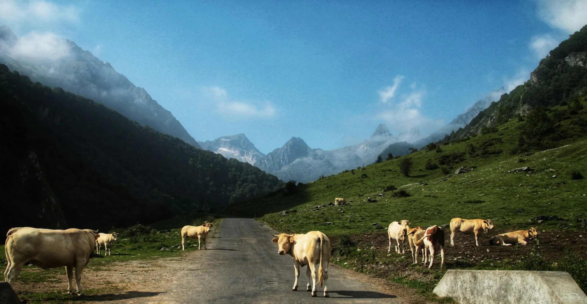
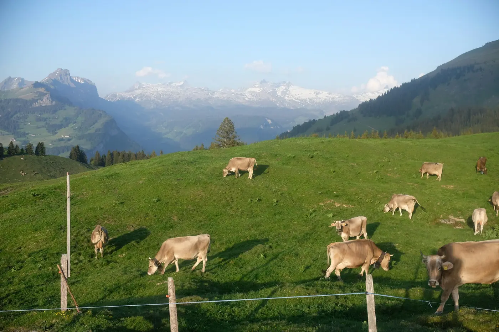
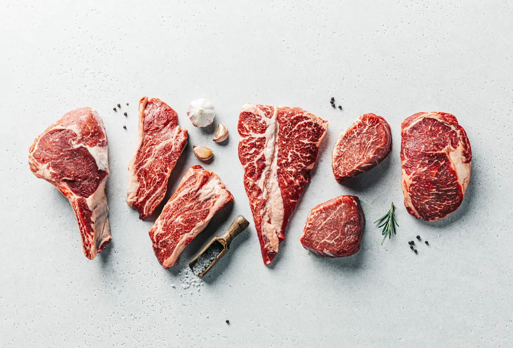
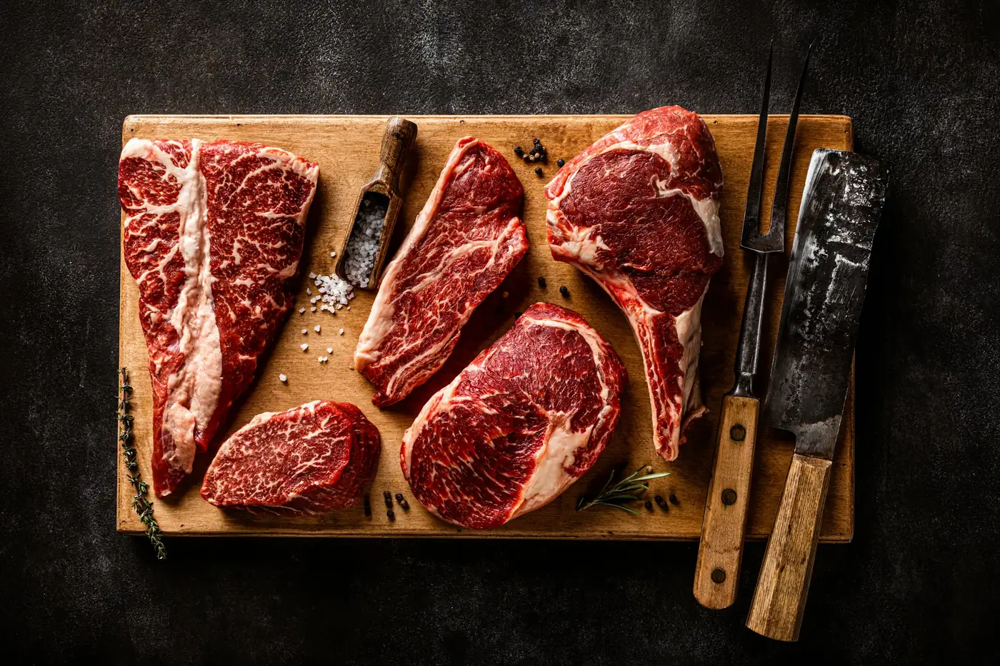

Vedella ecològica de Casa Camp, del camp a casa teva
Criem les vedelles en llibertat, a la pastura. Te n'enviem la carn a casa, en fred, en lots de 5 kg.
Demana el teu lotCom criem les vedelles

Som a Llessui, al Pallars Sobirà. Les nostres vedelles viuen a la pastura i mengen farratges naturals, ensitjat de raigràs i ordi de cultius ecològics. Des que neixen ens fixem que prenguin bé el calostre, i no els donem antibiòtics preventius ni pinsos industrials.
Fins ara veníem la carn a les carnisseries. Ara te l'enviem a tu, sense intermediaris.

Lot de vedella de 5 kg
Sis talls de les nostres vedelles, per fer a la planxa i per guisar.
- Picada1 kg
- Hamburguesa1 kg
- Entrecot1 kg
- Filet0,89 kg
- Xurrasco0,7 kg
- Estofat0,51 kg
Pesos aproximats: cada vedella és diferent.
- Entrega
- Uns dies després que es tanqui la tanda.
- Enviament
- En fred. Gratis a les rodalies de Sort; més lluny, segons el codi postal.
- Pagament
- Targeta, Apple Pay o Google Pay.

Vedella sencera o mitja
Tota la vedella, ja neta, o la meitat. És el que en diem una canal i una mitja canal.
- Mitja canalUns 000 kg
- Canal senceraUns 000 kg
Pesos aproximats: cada vedella és diferent.
000 €000 €/kg
- Com t'arriba
- Tallada a peces i envasada, en fred.
- Entrega
- No va per tandes: el dia i l'enviament, els acordem amb tu quan ens arriba la comanda.
- Pagament
- Targeta, Apple Pay o Google Pay.
Producte ecològic certificat
Preguntes
Com funcionen les tandes?
Ajuntem les comandes en tandes de 26 lots i les preparem i enviem totes alhora. Cada tanda es tanca quan s'omple o, com a molt tard, el dia de la data límit, encara que no sigui plena.
Per què es paga per avançat?
Així sabem quants lots hem de preparar per a cada tanda. Si tens dubtes, truca'ns abans de pagar.
Quan m'arribarà?
Quan es tanca la tanda, la preparem i te l'enviem: la tens a casa uns 00 dies després. El dia que la comanda surt cap a casa teva, t'escrivim amb el dia exacte.
Quant costa l'enviament?
A les rodalies de Sort no et cobrem res: te la portem nosaltres mateixos. Més lluny, te la porta un transportista i l'enviament es paga. Quan facis la comanda i hi posis el codi postal, et diem el preu abans de pagar.
Com arriba en fred?
Refrigerada fins a la porta de casa, tant si te la portem nosaltres com si te la porta el transportista.
I si no hi soc quan arriba?
El dia que surt, t'escrivim amb el dia exacte, perquè sàpigues quan arriba. Si saps que no hi seràs, digues-nos-ho a les notes de l'entrega.
Puc demanar més d'un lot?
Sí. Tots els lots d'una comanda viatgen junts: si no caben a la tanda d'ara, van a la següent, i t'ho diem abans de pagar.
Es pot congelar?
Sí. Si no te la menjaràs en uns dies, congela-la quan t'arribi.
Com es paga?
Amb targeta, Apple Pay o Google Pay, en fer la comanda.
Encara tens dubtes? Truca'ns al 646 455 128.